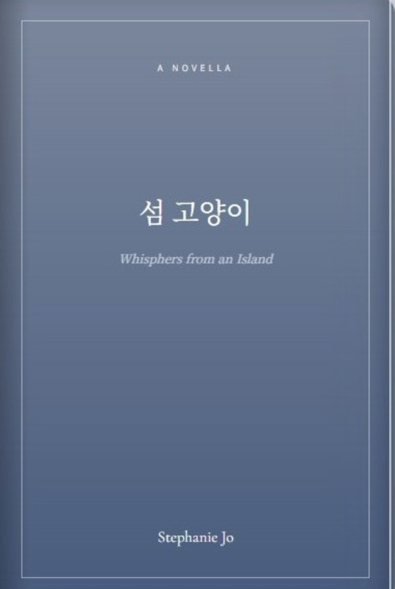

Stephanie's Book
A Story About Home, Told by the Sea
Back to Home
A NOVELLA
섬 고양이
Whisphers from an Island
Stephanie Jo

❮
❯
“Some stories are not written because they are finished.
They are written because they stayed.”